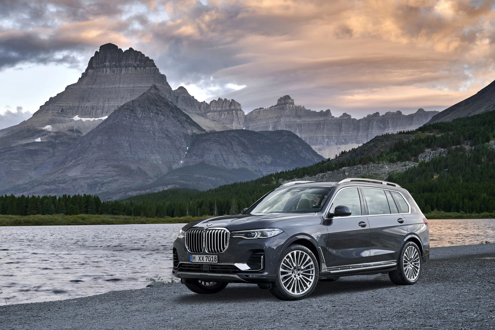
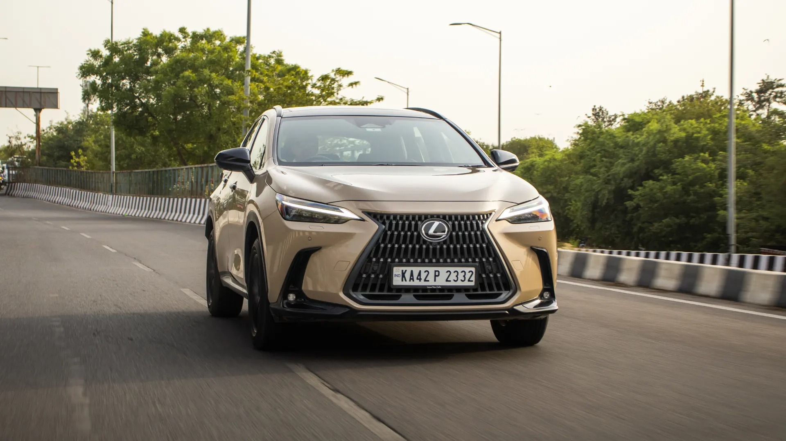
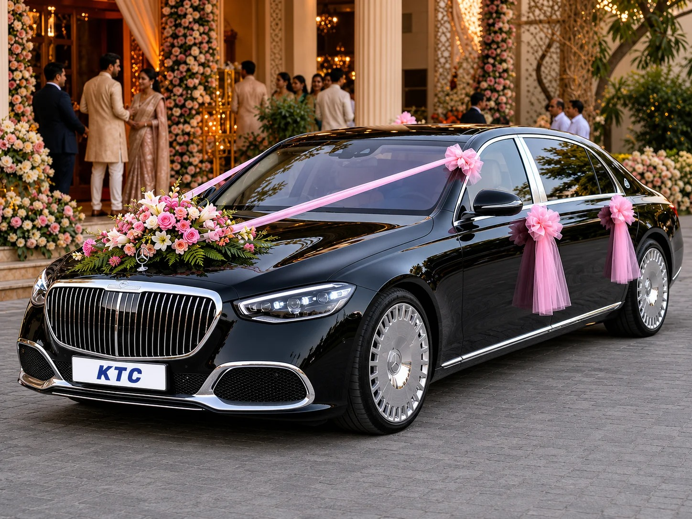
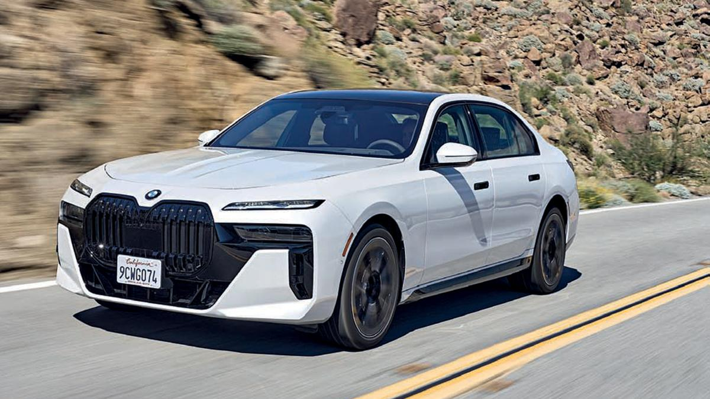
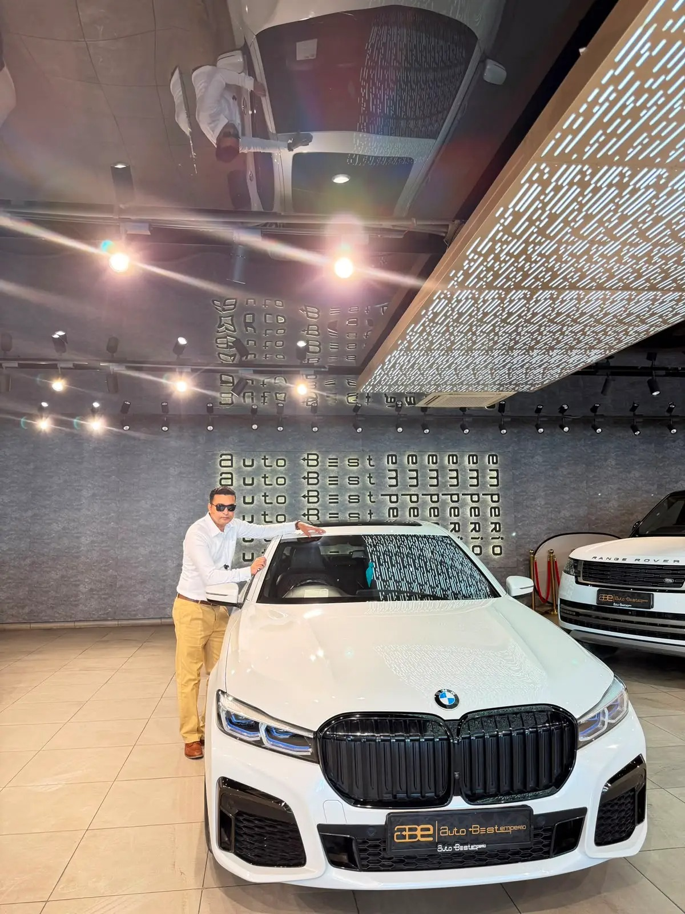
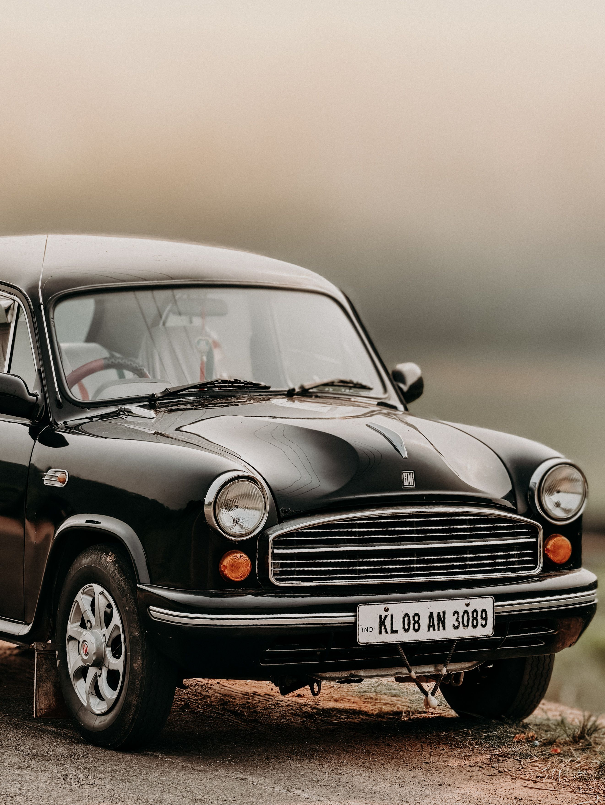
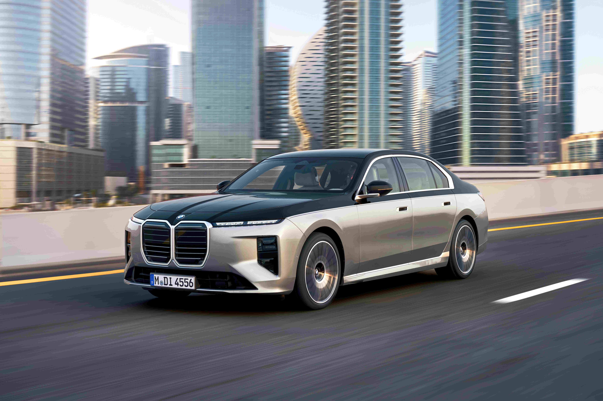

The Original Ten
concepts 01–10 — ten different design languages for the same product 01Open →
01Open →Aurora Glass
Soft light backdrop, drifting aurora blobs, frosted glass cards — the premium baseline.
Sora · Inter
02Open →Midnight Carbon
Dark carbon surfaces with a single electric accent — performance showroom mood.
Space Grotesk
03Open →Editorial Ivory
Paper-white magazine layout, serif display type, hairline rules — quiet luxury.
Playfair · Inter
04Open →Race Stripe
Bold diagonal stripes, condensed type, high-contrast blocks — motorsport energy.
Archivo Black 05Open →
05Open →Neo-Brutal
Thick borders, hard shadows, loud type — unapologetically direct and memorable.
Archivo
06Open →Cyber Neon
Black glass with neon glow and grid lines — a future-tech showroom.
Orbitron · Rajdhani
07Open →Swiss Mono
White space, hairlines, one cobalt accent — precision Swiss grid discipline.
Archivo · Space Mono
08Open →Terracotta Clay
Warm sand and terracotta with arched frames — handcrafted, earthy, premium.
Fraunces · Karla
09Open →Inspection Terminal
The report as the hero — terminal window, monospace type, green-on-slate data.
JetBrains Mono 10Open →
10Open →Noir Gold
Black and champagne gold with serif elegance — the private-banker look.
Cormorant · Jost